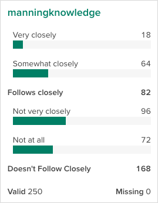
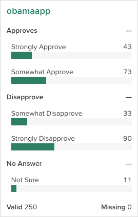

A common task in the market research world is to collapse two or more categories together to see how the collapsed categories compare to one another. For example, if you asked people to rate their preference on a scale of 1 to 10, you might want to see how the people who provide a rating between 1 and 5 compare to those who rated it between 6 and 10. This goes by a number of names, including “Top Box” or “Nets”, depending on the use case. In Crunch, we call this family of features Subtotals. This vignette shows how to define, manage, and analyze variables with subtotals.
Subtotals can be applied to any Categorical or Categorical Array variable. In R, we can view and set subtotal definitions with the subtotals() function. If there are no subtotals, the function will return NULL:
subtotals(ds$obamaapp)## NULLTo add subtotals, we can assign a list of Subtotal objects. Each Subtotal object has three things: a name to identify it; a set of categories to pool together, referenced either by category name or id; and a location to show it, either after a given category or with position="top" or "bottom" to pin it first or last in the list.
subtotals(ds$DiversityImportant) <- list(
Subtotal(name = "Follows closely",
categories = c("Strongly closely", "Very closely"),
after = "Somewhat closely"),
Subtotal(name = "Generally disagree",
categories = c("Not very closely", "Not at all"),
after = "Not at all")
)Now, if we check subtotals(), we can see that we have saved them. In this output we see a few different aspects of subtotals: the anchor is the id of the category to put the subtotal after (matching the after or position argument in Subtotal()), name, aggregation functions and args, which in the this case are the category ids to include in the subtotal.
subtotals(ds$manningknowledge)## anchor name func args kwargs
## 1 2 Follows closely subtotal 2 and 1 positive: 2 and 1 |
## 2 4 Doesn't Follow Closely subtotal 3 and 4 positive: 3 and 4 |This shows up in the Categorical variable card on the web app like this:

We can also add headings, which are similar to subtotals in that they are additions to categorical variables that will be displayed in the app, but they don’t sum up any categories. For a variable with many categories, they can help group variables visually. Here we add some guides to Obama’s approval rating.
subtotals(ds$obamaapp) <- list(
Heading(name = "Approves",
after = 0),
Heading(name = "Disapprove",
after = "Somewhat Approve"),
Heading(name = "No Answer",
after = "Strongly Disapprove")
)
subtotals(ds$obamaapp)## anchor name func args kwargs
## 1 0 Approves NA NA
## 2 2 Disapprove NA NA
## 3 4 No Answer NA NAAgain, this shows up in the Categorical variable card on the web app:

Subtotals and headings can be removed by assigning a NULL value.
subtotals(ds$YearsCodedJob) <- NULL## NULLIn the Economist survey, there are a number of questions that have the same response categories. If the category names (or ids, if we’re using those) are the same, we can use the same set of subtotals across multiple variables.
approve_subtotals <- list(
Subtotal(name = "Approves",
categories = c("Somewhat approve", "Strongly approve"),
after = "Somewhat approve"),
Subtotal(name = "Disapprove",
categories = c("Somewhat disapprove", "Strongly disapprove"),
after = "Strongly disapprove"))Notice here, because each of the categories for these variables has slightly different ids, the args in the output differs slightly. But, because we used category names when we were constructing our list of subtotals, when we store them on the variable itself, Crunch does the right thing and converts them over to the correct ids.
## anchor name func args kwargs
## 1 2 Approves subtotal 2 and 1 positive: 2 and 1 |
## 2 4 Disapprove subtotal 3 and 4 positive: 3 and 4 |## anchor name func args kwargs
## 1 2 Approves subtotal 2 and 1 positive: 2 and 1 |
## 2 5 Disapprove subtotal 4 and 5 positive: 4 and 5 |Now that we have defined subtotals on the congressional approval question, if we use it in a crosstab, we can see the subtotals.
crtabs(~congapp + gender, data = ds)## gender
## congapp Male Female
## Strongly approve 0 0
## Somewhat approve 4 5
## Approves 4 5
## Neither approve nor disapprove 11 21
## Somewhat disapprove 14 33
## Strongly disapprove 67 46
## Disapprove 81 79
## Not sure 5 23We can even get just the subtotals as an array from the result if we want to ignore the constituent groups:
subtotalArray(crtabs(~congapp + gender, data = ds))## gender
## congapp Male Female
## Approves 4 5
## Disapprove 81 79If you don’t want to see the subtotals as part of these summaries, you can suppress them from display with the noTransforms() function around crtabs().
noTransforms(crtabs(~congapp + gender, data = ds))## gender
## congapp Male Female
## Strongly approve 0 0
## Somewhat approve 4 5
## Neither approve nor disapprove 11 21
## Somewhat disapprove 14 33
## Strongly disapprove 67 46
## Not sure 5 23This does not modify the variable—the subtotals are still defined and visible in the web app—but they are removed from the current analysis.